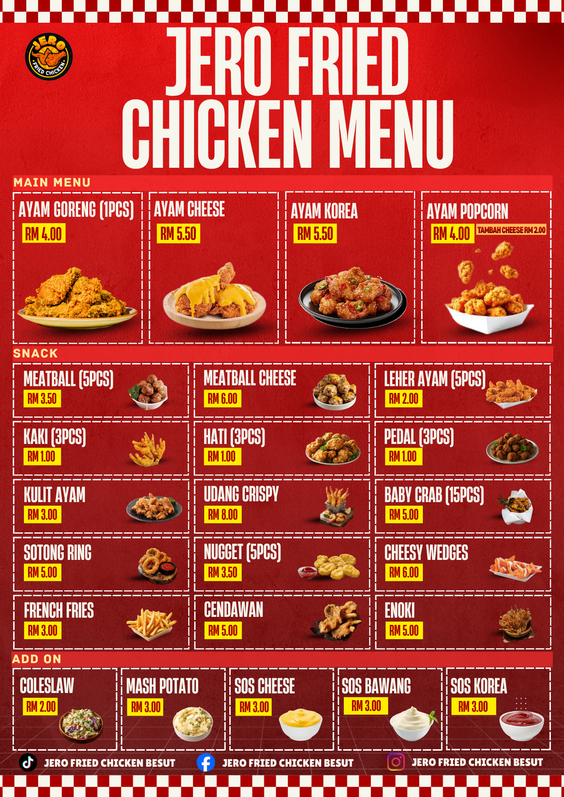
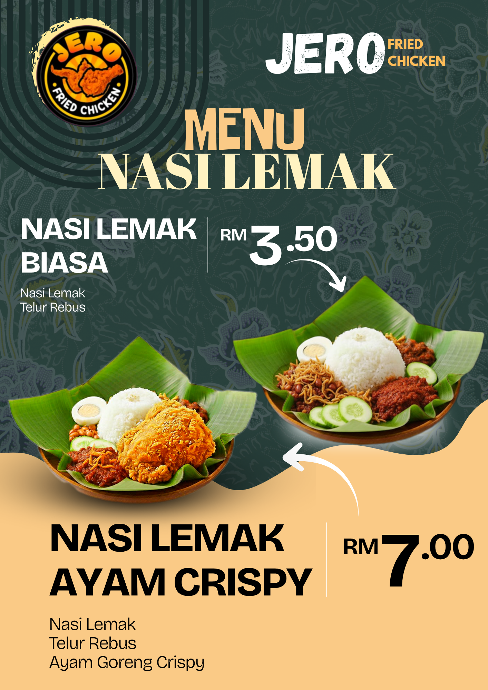
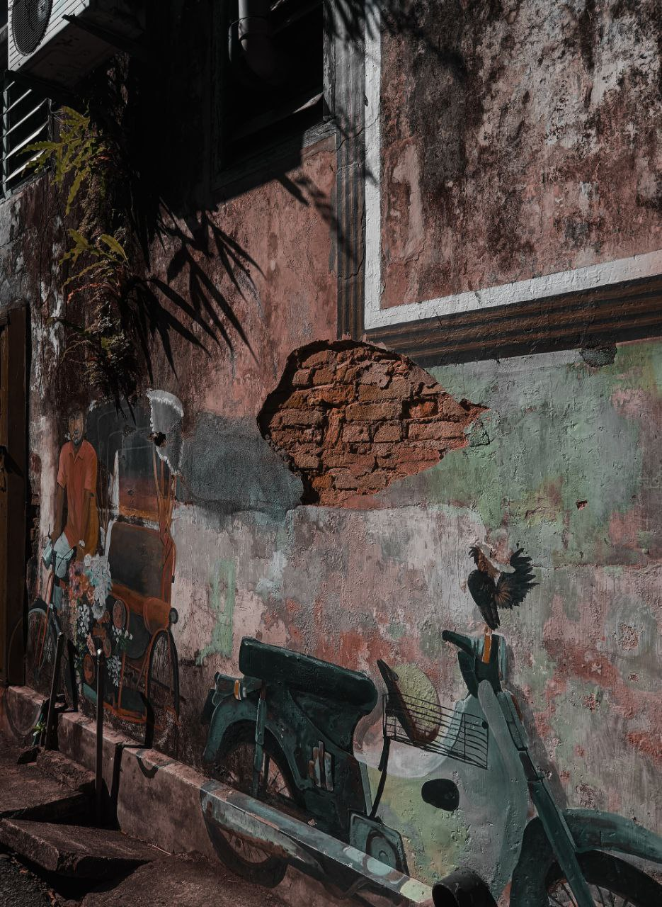
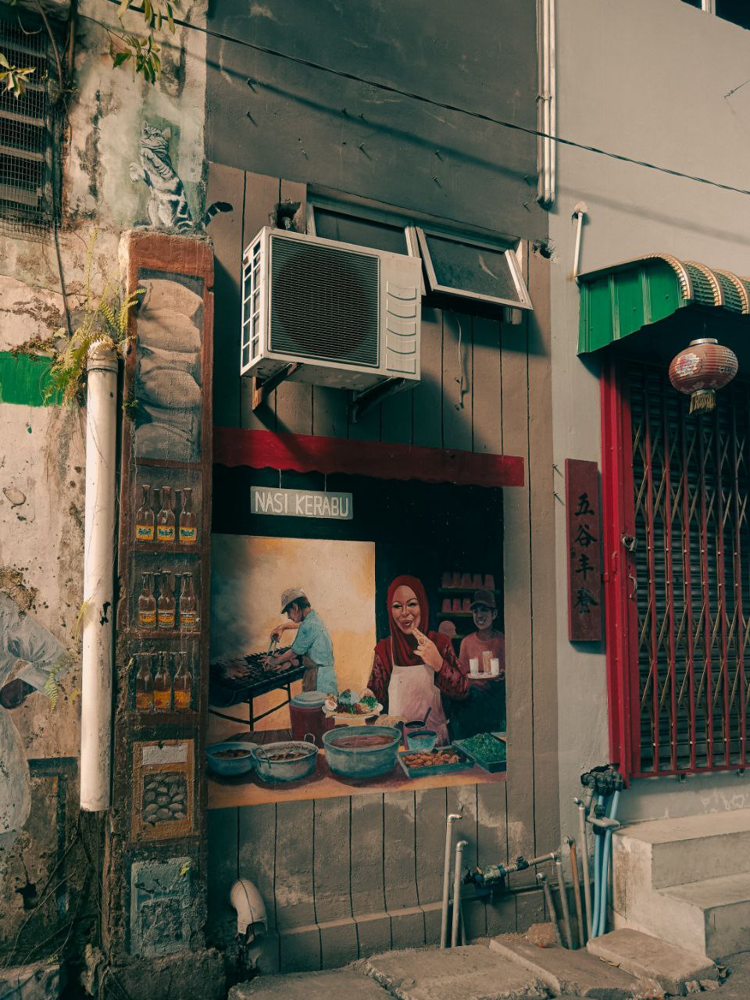
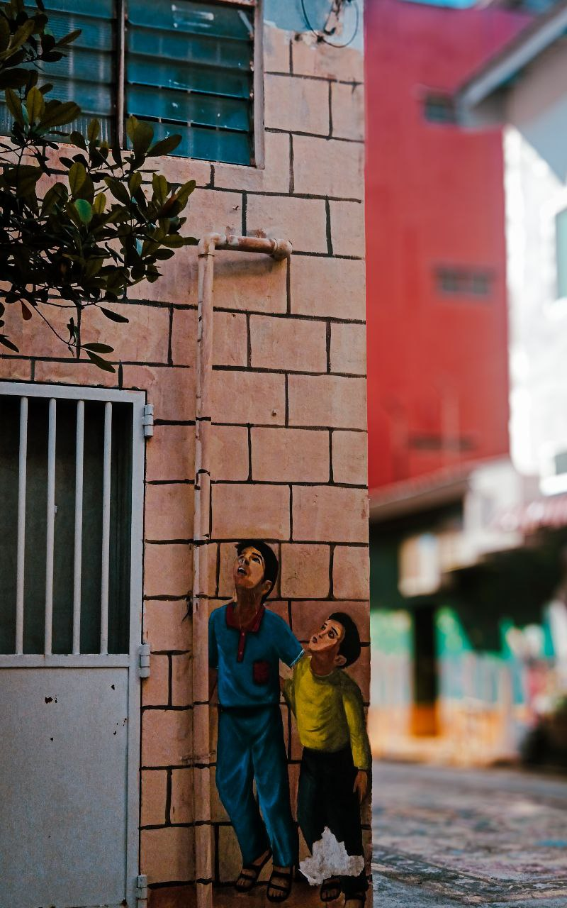
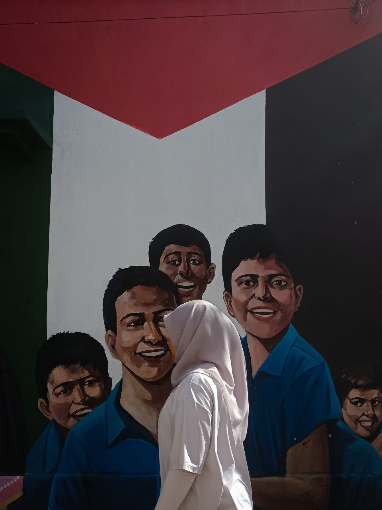

The InsideJournal & Process.
A comprehensive multimedia design archive showcasing the production integration between responsive web application systems, interactive 3D asset modeling environments, and compiled brand graphic identities.
01 / User Interface & Web Application
Objective: To overhaul an outdated pet-boarding management interface into a responsive, high-fidelity customer booking portal. This design system prioritizes structured pricing tiers, fluid user authentication paths, and intuitive system dashboard grids to minimize dropout rates during checkout workflows.


02 / 3D Workshop Environment
Objective: Virtual space exploration detailing low-poly and high-poly hard-surface industrial assets. The focus centers heavily on optimal polygon budget containment, customized non-destructive modifier configurations, and procedural material roughness mapping to emulate lifelike factory conditions.
// Environmental Scenery AssetsWorkshop Stage
Foundational structural mesh blocking using regional architectural metrics and global coordinate planes.

Render Corner
Close-up baking evaluation of ambient occlusion, contact ray shadows, and multi-layered concrete floor materials.

Lighting Setup
Volumetric environment fog combined with a high-intensity directional sun node to execute mood-driven lighting panels.

Final Composite
Assembling industrial beams, metallic assets, and custom camera composition focal lengths for production sign-off.

03 / Brand Identity & Visual Graphics
Objective: To devise a scalable visual marketing toolkit for a fast-casual food franchise. Deliverables include optimized menu grids, large-format event display banners, and curated social media advertising guidelines designed to establish immediate market authority.
Jero Fried Chicken Menu
Structured print design showcasing distinct product categorization, pricing taxonomy, and high-contrast color blocks.

Nasi Lemak Menu
An editorial asset balancing localized culinary vectors with contemporary typography alignments.

Crispy Chicken Wing Banner
A wide billboard design utilizing dramatic lighting adjustments to emphasize food texture and freshness.

Nasi Lemak Banner
Large commercial print file focusing on saturated warm tones and sharp product masks for store display boards.
04 / Capture Frames
A cinematic collection of unedited raw frames capturing contrasting geometric architecture, deep shadows, and urban textures.




Frequently Asked Inquiries
Quick structured responses regarding operational design pipelines and framework handoffs.
Yes. All modeling workshops inside this archive strictly maintain structured polygon hierarchies, minimal vertex stretching, and standard baked PBR maps suited for WebGL applications or game engines.
This project is executed entirely via pure vanilla HTML5 structure, modular CSS variables, and modern responsive UI layout grids to guarantee fast browser rendering times and seamless cross-device compatibility.
Have an interesting project in mind?
Let's build meaningful digital platforms, interactive interfaces, or compelling branding directions together.
Get In TouchOpen for selected freelance opportunities, UI/UX asset builds, and framework architecture consultation commissions.